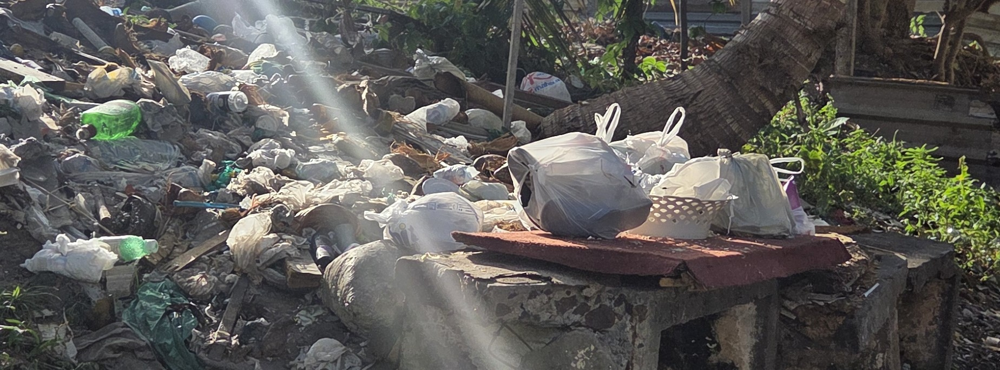
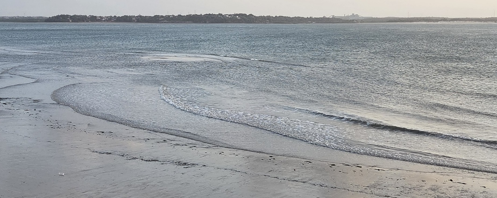
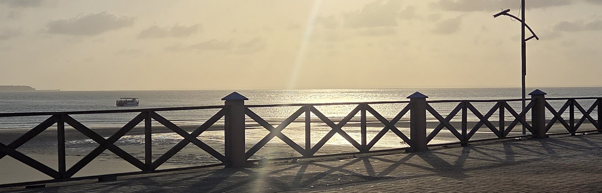
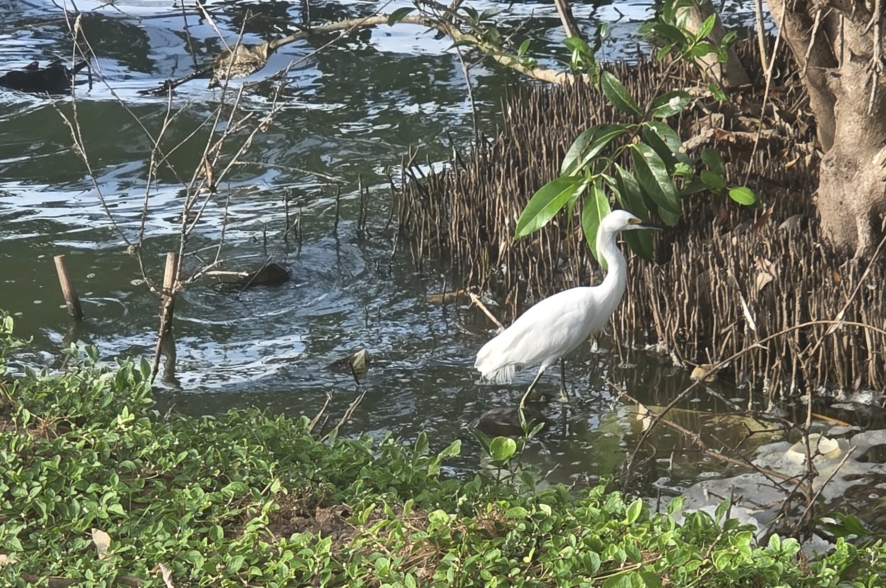
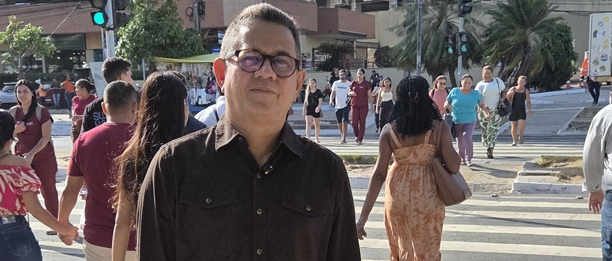

COMPROMISSOS PARA O MARANHÃO
UMA SÓ CAUSA.
18 COMPROMISSOS.
Propostas que unem dignidade, desenvolvimento sustentável e justiça ambiental no dia a dia dos maranhenses.
01
SAÚDE AMBIENTAL
Proteção para comunidades afetadas pela poluição e por riscos ambientais.
- Fiscalizar índices de qualidade do ar, da água e dos ecossistemas aquáticos maranhenses.
- Defender comunidades rurais próximas a distritos industriais, no tocante aos efeitos nocivos da poluição ambiental.
- Fortalecer o controle sobre defensivos e a proteção dos solos e lençóis freáticos das bacias hidrográficas do Maranhão.

01
02
02
EDUCAÇÃO AMBIENTAL E CLIMÁTICA
Educação que prepara crianças, jovens e adultos para construir um futuro sustentável.
- Garantir formação socioambiental crítica em instituições públicas e privadas da rede de ensino maranhense.
- Defender ações de sustentabilidade e justiça climática no currículo escolar dos diferentes níveis e modalidades de ensino.
- Valorizar professores, escolas e projetos de educação ambiental formal, não-formal e informal.
03
SEGURANÇA ALIMENTAR
Mais acesso regular a alimentos de qualidade para o bem-estar físico e mental.
- Monitorar políticas de segurança alimentar e nutricional, no âmbito do território maranhense.
- Incentivar alimentação preventiva de doenças crônicas não transmissíveis, junto a população maranhense.
- Fortalecer ações de alimentação saudável na comunidade escolar maranhense.

03 04
04
04
EMPREGO VERDE
Desenvolvimento econômico sustentável, com trabalho e renda para a população.
- Ampliar o uso de energia solar e eólica no território maranhense.
- Valorizar agentes ambientais comunitários, sobretudo ao emprego verde.
- Formar mão de obra para a economia de baixo carbono e reindustrialuzação sustentável.
05
MEIO AMBIENTE
Defesa permanente dos recursos naturais renováveis e não renováveis do Maranhão.
- Fiscalizar o cumprimento da política ambiental estadual, bem como o desenvolvimento territorial maranhense.
- Compatibilizar produção, uso do solo e proteção ambiental dos biomas e ecossistemas maranhenses.
- Reforçar o licenciamento e a avaliação de impactos ambientais dos empreendimentos potencialmente poluidores.

05
06
MOBILIDADE E INFRAESTRUTURA
Com condições de balneabilidade, turismo e lazer das praias e rios do território maranhense.
- Incentivar o desenvolvimento territorial por meio da integração entre mobilidade urbana, infraestrutura e preservação ambiental e outras áreas do interior maranhense.
- Defender projetos de mobilidade e infraestrutura urbana que conectem os polos turísticos do litoral e do interior.
- Reivindicar análise, controle e monitoramento das praias e rios urbanos, com gestão responsável de resíduos sólidos.

06PARTICIPE